Panel (app.adone.uz), rahbar Mini App'i va Telegram bildirishnomalari: ishxonani sozlash, xodimlar, davomat, vazifalar, so'rovlar, ish haqi, hisobotlar
Sozlash: filial, jadval, xodim, qoidalar, sozlamalar
To'liq
Xodim qo'shish, vazifa berish
—
Kundalik nazorat
Davomat, bosh sahifa
Bugun, Qarorlar, Vazifalar
Kechikdi / kelmadi / shubhali xabarlari
Qarorlar: hisobot, ruxsat, muddat, shubhali, yangi xodim
Ha
Ha — telefonda
Tugma bilan (✅ / 🔁 / ❌)
Hisobotlar, Excel, ish haqi tuzatish
Ha
Faqat ko'rish
—
Menejer (bo'lim boshlig'i) — Sozlamalar → Jamoa'da qo'shiladi va unga bo'lim(lar) biriktiriladi. U faqat shu bo'limdagi xodimlarni ko'radi va boshqaradi; boshqa bo'lim xodimiga vazifa bera olmaydi.
2 Panelga kirish, parol, Telegram'ni ulash
Nima uchun: panel — asosiy ish joyi; Telegram ulangach bildirishnomalar va Mini App ham ishlaydi.
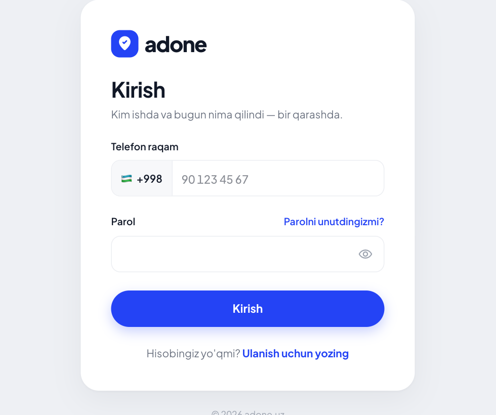
Kirish: telefon raqam va parol
Brauzerda app.adone.uz ni oching. Telefon (faqat 9 raqam, +998 turibdi) va parolni kiriting → Kirish.
Birinchi kirishda vaqtinchalik parol bo'lsa, tepada sariq banner chiqadi — Sozlamalar → Profilim → Parolni o'zgartirish (kamida 8 belgi, harf va raqam). Parol o'zgargach boshqa qurilmalardagi sessiyalar yopiladi.
5 marta noto'g'ri parol — 15 daqiqaga qulflanadi.
Chiqish — chap pastdagi ism yonidagi ⎋ tugmasi.
Telegram'ni ulash (bildirishnomalar + Mini App)
Sozlamalar → Jamoa → o'z qatoringizda «Telegram ulash» (yoki yangi admin uchun «Telegram orqali taklif») — havola chiqadi: t.me/adoneuz_bot?start=mem_….
Havolani telefoningizda oching → botda Start → «📱 Raqamni yuborish». Raqam paneldagi raqamingiz bilan solishtiriladi.
Bot «✅ Telegram ulandi» deydi. Endi kechikkanlar, kelmaganlar, yangi xodimlar, hisobotlar shu chatga keladi; chat menyusidagi «Ochish» rahbar Mini App'ini ochadi (17-bob).
a
adone davomatbot
/start mem_k7p2qx9m4t10:00
Assalomu alaykum! Siz Mudom bozor rahbariyati sifatida ulanyapsiz.
Bu siz ekaningizni tasdiqlash uchun pastdagi «📱 Raqamni yuborish» tugmasini bosing — raqam paneldagi raqamingiz bilan solishtiriladi.10:00
📱 Kontakt: +998 90 111 22 3310:00
✅ Telegram ulandi. Mudom bozor bo'yicha bildirishnomalar (kechikkanlar, kelmaganlar, yangi xodimlar, vazifa hisobotlari) shu yerga keladi. Hisobotni shu yerdan tasdiqlash yoki qaytarish mumkin.10:00
📱 Raqamni yuborish
Rahbar Telegram'ini ulash
a
adone davomatbot
yangi admin «Telegram orqali taklif» bilan
🔐 Panelga kirish
app.adone.uz
Telefon: +998 90 111 22 44
Vaqtinchalik parol: k7m-4p9x
Kirgach, Sozlamalar → Profilim'da parolni o'zgartiring. Bu xabarni hech kimga yubormang.10:05
Yangi admin/menejerga bot parolni o'zi yuboradi
«Bu raqam taklif qilingan rahbar raqamiga mos kelmadi» — Telegram'ingiz boshqa raqamda. Sozlamalar → Jamoa'da raqamni tekshiring yoki o'sha raqamdagi Telegram'dan kiring. mem_ havola bir marta ishlaydi — eskirsa yangisini oling.
Parolni unutsangiz — egasi yoki admin Sozlamalar → Jamoa'da vaqtinchalik parol beradi (yoki Telegram orqali taklif yuboradi). Boshqa ishxonada ham a'zo bo'lgan hisobning paroli bu yerdan o'zgartirilmaydi.
3 Bosh sahifa
Nima uchun: bir qarashda bugungi holat — kim ishda, kim kechikdi, nimalar qaror kutmoqda.
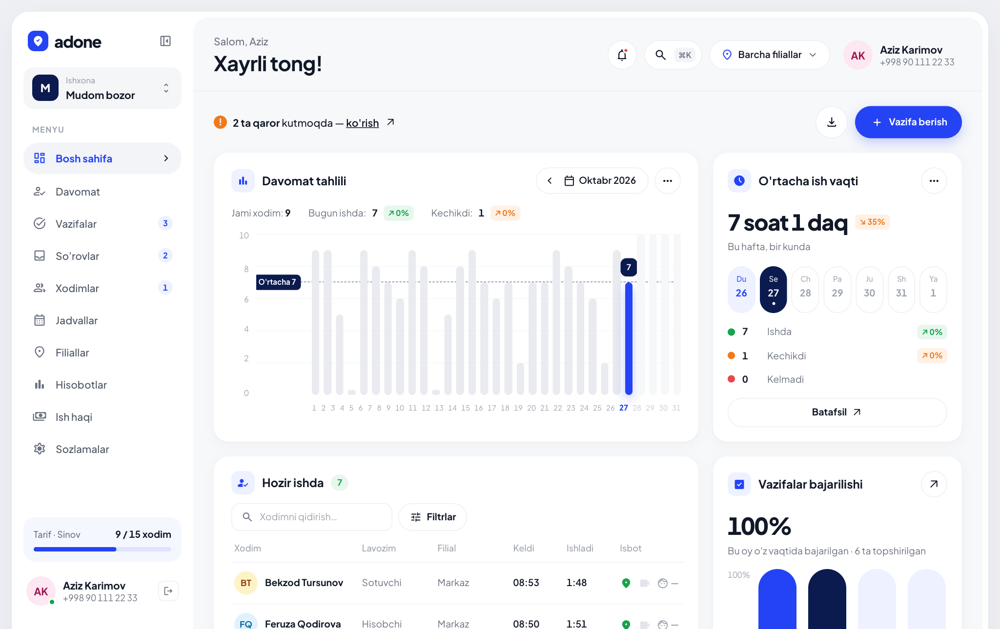
Bosh sahifa: davomat tahlili, o'rtacha ish vaqti, hozir ishda, vazifalar bajarilishi, qaror kutmoqda
Davomat tahlili — oy bo'yicha kunlik kelganlar soni; bugungi ishda / kechikdi / kelmadi.
Hozir ishda — jonli ro'yxat: keldi vaqti, ishlagan vaqt, isbot belgilari (📍 lokatsiya, 📹 video, 🙂 yuz). Qator ustiga bosilsa — xodim profili.
Qaror kutmoqda — shubhali keldi-ketdi va tasdiq kutayotgan xodimlar: shu yerdan Tasdiqlash / Rad etish.
Vazifalar bajarilishi — shu oyda o'z vaqtida bajarilgan ulushi.
Tepadagi filial tanlagich — hamma raqamlar tanlangan filial bo'yicha. «+ Vazifa berish» — tezkor tugma.
4 Filiallar (xarita, radius)
Nima uchun: «Keldim» faqat filial nuqtasidan belgilangan radius ichida qabul qilinadi — nuqta aniq bo'lsin.
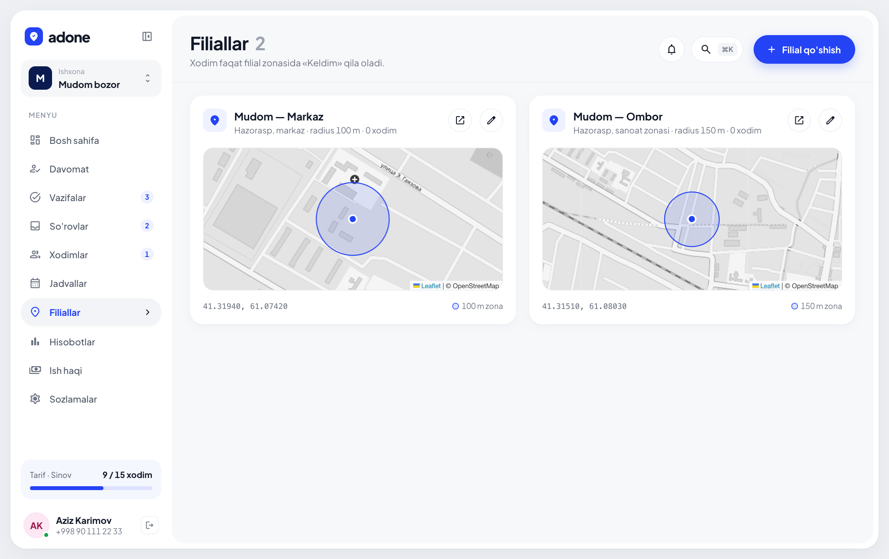
Filiallar: xarita, radius, xodimlar soni
Filiallar → «Filial qo'shish». Nomi (masalan, «Mudom — Markaz»), Manzil.
Joylashuv: Google Maps'da do'konni toping → Ulashish → havolani nusxalang (maps.app.goo.gl/… qisqa havola ham, google.com/maps/…@41.31,61.07 ham bo'ladi) va maydonga qo'ying — koordinata o'zi olinadi. Yoki 41.3194, 61.0742 ko'rinishida yozing. Xaritada belgini sudrab aniqlashtirish mumkin.
Radius — standart 100 m. Katta hovli/bozor bo'lsa 150–200 m; kichik do'kon — 50–80 m. GPS xatosi hisobga olinadi (aniqlik zaxirasi), shuning uchun juda kichik qo'ymang.
Saqlang. Xodim kartasida filialni tanlashni unutmang — filialsiz xodim «Keldim» qila olmaydi.
Xodim ko'p «zonadan tashqari» olsa: xaritada belgi do'konning o'zidami tekshiring (ko'pincha havola do'kon emas, ko'cha nuqtasiga tushadi) yoki radiusni 20–50 m oshiring.
5 Jadvallar (ish grafigi)
Nima uchun: kechikish, kelmagan kun va ishlagan soat jadvalga qarab hisoblanadi; jadvalsiz xodimga kechikish yozilmaydi.
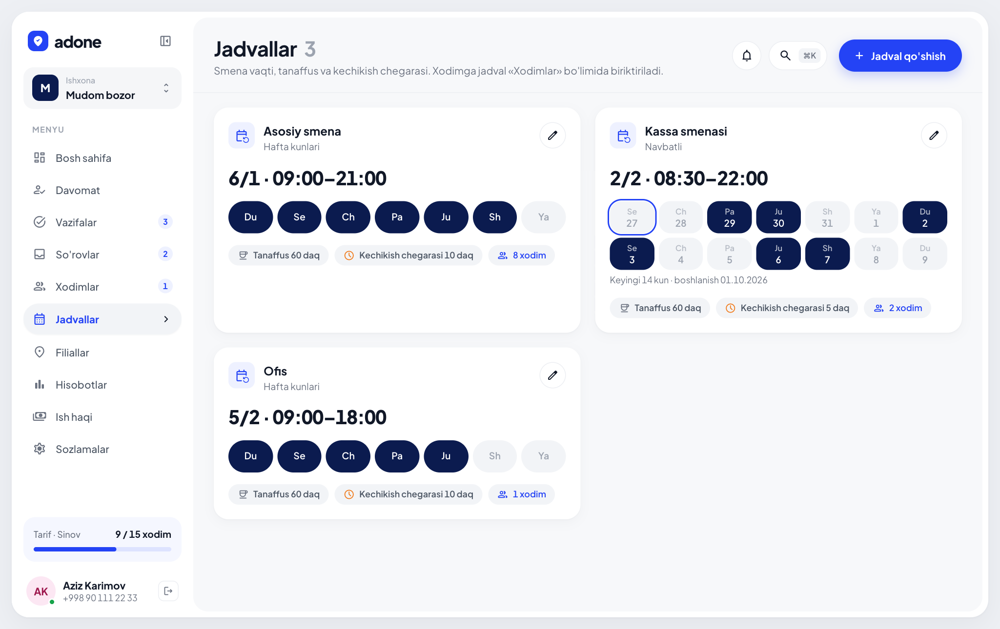
Jadvallar: haftalik, navbatli, erkin
Jadvallar → «Jadval qo'shish». Turi: Haftalik (5/2, 6/1 — ish kunlarini belgilaysiz), Navbatli (2/2, 3/1 — N kun ish, M kun dam, boshlanish sanasi bilan), Erkin (smena yo'q, faqat ishlagan vaqt hisoblanadi).
Boshlanishi / Tugashi (masalan 09:00–18:00). Tugash boshlanishdan kichik bo'lsa — tungi smena: yarim tundan o'tadi, smena boshlangan kunga yoziladi.
Tanaffus (daqiqa) — ishlagan vaqtdan ayriladi. Kechikish chegarasi (daqiqa) — shu daqiqagacha kechikish hisoblanmaydi (masalan 10).
Jadvalni xodimga biriktiring: Xodimlar → xodim → Ish jadvali. Bitta jadval ko'p xodimga.
Dam kunida kelgan xodim «Dam olish» holatida ishlagan vaqt bilan ko'rinadi — kelmagan deb hisoblanmaydi. Bayramlar taqvimi — keyingi versiyada.
6 Bo'limlar
Nima uchun: bo'lim boshlig'i faqat o'z bo'limini ko'radi; bildirishnomalar ham bo'lim bo'yicha boradi; hisobotlar bo'limlar kesimida.
Xodimlar sahifasining o'ng tomonida Bo'limlar kartasi → «Qo'shish» → nomi (Sotuv zali, Kassa, Ombor, Ofis…).
Bo'lim boshlig'ini tayinlash: Sozlamalar → Jamoa'da menejer qo'shib, unga bo'limni biriktirasiz (yoki bo'limni tahrirlashda boshliqni tanlang).
Xodim kartasida Bo'limni tanlang. Bo'limsiz xodimni menejer ko'rmaydi — faqat egasi va admin.
7 Xodimlar: qo'shish, taklif havolasi, tasdiqlash
Nima uchun: xodim botga faqat sizning havolangiz orqali va faqat siz kiritgan raqam bilan kiradi — begona odam ulana olmaydi.
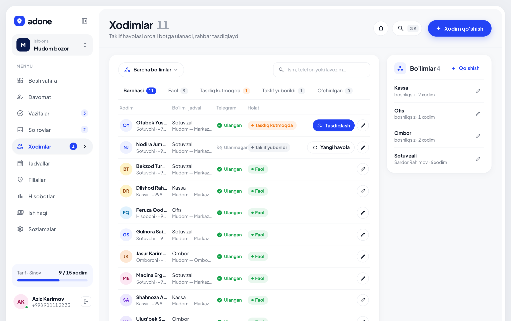
Xodimlar: holatlar, taklif havolasi, bo'limlar
Xodimlar → «Xodim qo'shish»: Ism-familiya, Telefon (xodimning Telegram'idagi raqam!), lavozim, bo'lim, filial, ish jadvali, ish haqi turi (oylik / kunbay / soatbay) va stavka (so'm).
Saqlangach xodim «Taklif yuborildi» holatida, qatorida Havola (nusxa) va Telegram'da yuborish tugmalari. Havolani xodimga yuboring — 14 kun amal qiladi, bir marta ishlaydi.
Xodim botda: Start → raqamini yuboradi (sizniki bilan solishtiriladi) → rozilik → dumaloq video (yuz namunasi). Holat «Tasdiq kutmoqda» bo'ladi, sizga Telegram'da xabar keladi.
Tasdiqlash: Xodimlar → «Tasdiq kutmoqda» tabida Tasdiqlash (yoki bosh sahifa / Mini App → Qarorlar). Xodimga «🎉 … sizni tasdiqladi» xabari ketadi, «Keldim» ishlay boshlaydi.
Avtomatik tasdiqlash (Sozlamalar → Davomat) yoqilsa, xodim ro'yxatdan o'tishi bilan faol bo'ladi — tasdiq shart emas.
Xodim «raqam mos kelmadi» desa — Xodimlar → xodim → tahrirlash → Telefonni uning Telegram raqamiga to'g'rilang, keyin havolani qayta yuboring. Havola eskirgan bo'lsa — profil → «Havolani yangilash».
8 Xodim profili
Nima uchun: bitta xodim haqida hamma narsa bir joyda — tabel, vazifalar, so'rovlar, ish haqi, yuz namunasi, qurilma.
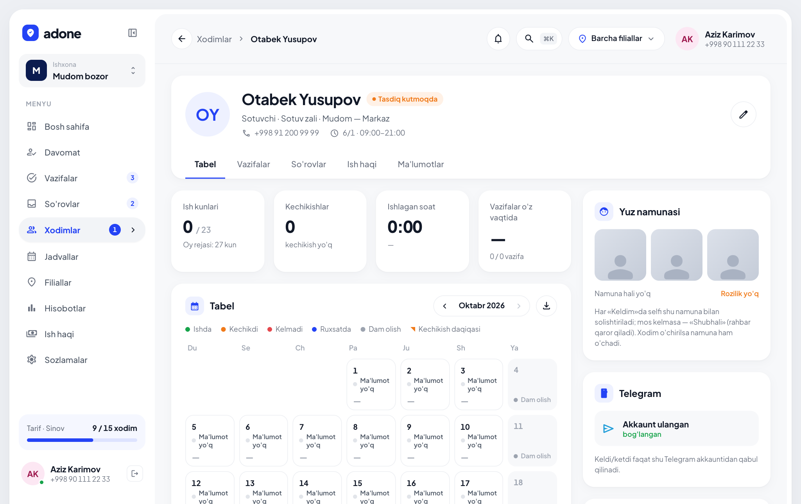
Xodim profili: tabel-kalendar va KPI
Tabel — oy kalendari: har kun holati (Ishda / Kechikdi / Kelmadi / Ruxsatda / Dam olish), ishlagan soat; KPI: ish kunlari, kechikishlar, soat, vazifalar o'z vaqtida. Katak bosilsa — o'sha kunning davomati.
Vazifalar — ish jurnali: berilgan va o'zi qo'shgan ishlar kun bo'yicha, sarflangan vaqt, baho.
So'rovlar — ruxsat so'rovlari tarixi.
Ish haqi (egasi, admin) — shu oy hisobi: asosiy, jarimalar, bonuslar, tuzatish, jami.
Ma'lumotlar — telefon, bo'lim, filial, jadval; Yuz namunasi (holati, «Qayta olish» — xodimga /yuz haqida xabar), Telegram (ulangan/yo'q, taklif havolasi), Qurilma (Mini App bog'lagan telefon, «Uzish» — telefon almashganda).
Tepada: «Vazifa berish» (shu xodimga), tahrirlash ✎, «Ishdan bo'shatish» — xodim o'chirilmaydi, «O'chirilgan» holatga o'tadi; yuz namunasi va videolari o'chiriladi (qonun talabi).
Nima uchun: davomat — o'zgarmas jurnal. Siz eski yozuvni o'chirmaysiz, sabab bilan tuzatish qo'shasiz; hamma o'zgarish izi qoladi.
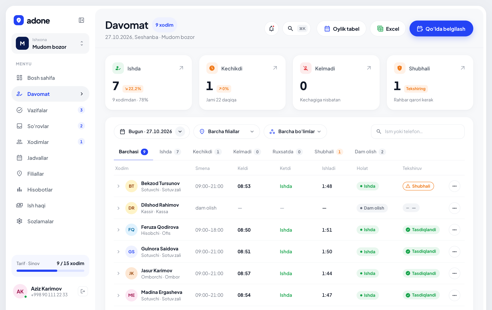
Davomat: kun, tablar (Barchasi · Ishda · Kechikdi · Kelmadi · Ruxsatda · Shubhali · Dam olish), qator menyusi
Davomat → sana (standart bugun), filial / bo'lim filtri, qidiruv. Tablar holat bo'yicha; Shubhali — tekshiruvi aniq bo'lmagan keldi-ketdilar.
Qator ochilsa — isbot kartochkalari: selfi (Mini App) yoki dumaloq video (bot), mini xarita va masofa, yuz mosligi %, GPS aniqligi, lokatsiya turi (jonli/oddiy), manba; sabablar (zonadan tashqari, yuz mos kelmadi, boshqa qurilma…). Rasm/videoni bosib kattalashtiring.
Qator ⋯ menyusi → «Davomatni tuzatish»: Keldi / Ketdi vaqtini belgilash (eski birinchi kirish va oxirgi chiqish bekor bo'ladi, yangisi qo'shiladi), kirish/chiqish qo'shish, hodisani bekor qilish yoki shubhalini tasdiqlash. Sabab majburiy — audit jurnaliga tushadi. Tungi smenada ketish uchun «ertasi kun» belgisi.
Shubhali hodisa bo'yicha qaror: bosh sahifadagi «Qaror kutmoqda» yoki Mini App → Qarorlar → isbotni ko'rib Tasdiqlash (hodisa «ok» bo'ladi) yoki Rad etish (hodisa bekor, kun «Kelmadi» bo'lib qoladi). Qaror qilinmaguncha kun «shubhali» belgisi bilan turadi.
Xodim «Ketdim»ni unutsa — smenadan 3 soat keyin (erkin grafikda 16 soat) kun o'zi yopiladi, sizga xabar keladi; haqiqiy vaqtni xodimdan so'rab tuzatasiz.
Nega «shubhali»? Yuz namunaga yetarli o'xshamadi, kadrda yuz yo'q yoki boshqa odam, bosh burilmadi (jonlilik), yuz servisi vaqtincha ishlamadi, Mini App boshqa qurilmadan. Geofence (zonadan tashqari) esa rad etiladi — jurnalga tushadi, lekin davomat qayd etilmaydi.
10 Tabel va Excel
Nima uchun: oylik tabel — ish haqi va hisobotlarning asosi; buxgalteriyaga Excel kerak.
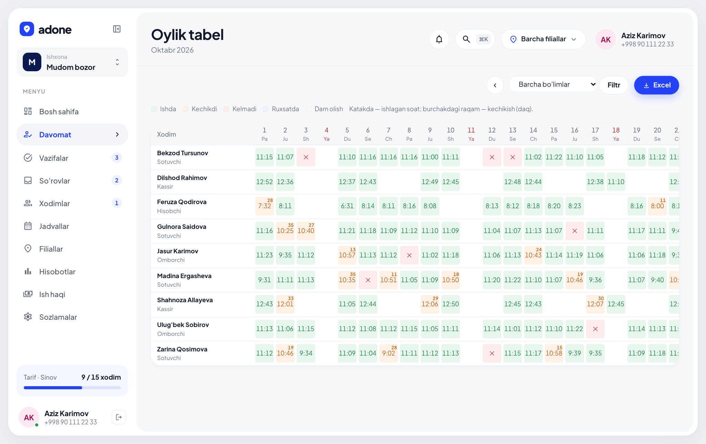
Oylik tabel: xodim × kun
Davomat → Tabel (yoki /davomat/tabel). Oyni tanlang, bo'lim filtri.
Har katak — kun holati (rang) va ishlagan soat; oxirida jami: ish kunlari, soat, kechikishlar, kelmagan, ruxsat.
Excel tugmasi — shu oy tabelini yuklab olish.
Tabel «attendance_days» yig'masidan: har 10 daqiqada yangilanadi, bugungi kun jonli hisoblanadi. Tuzatish qilsangiz o'sha kun darhol qayta hisoblanadi.
11 Vazifa berish
Nima uchun: vazifa xodimga Telegram'da tugmalar bilan boradi — qabul, bajardim, hisobot. Bir vazifani bir nechta kishiga bersangiz har biriga alohida nusxa.
Vazifalar → «Vazifa berish» (yoki bosh sahifa / xodim profili).
Kimga — ism yozib tanlang yoki Bo'lim: … / Filial: … chipini bosing (hammasi qo'shiladi). Botga ulanmaganlar uchun ogohlantirish chiqadi — xabar bormaydi.
Sarlavha, Tavsif (nima, qayerda, qanday). Muddat va vaqt (standart bugun 18:00; soat 17 dan keyin — ertaga).
Muhimlik: Oddiy / O'rta / Shoshilinch. Hisobot talabi: Faqat tugma / Rasm / Video / Lokatsiya — xodim shusiz topshira olmaydi (tizim tekshiradi).
Bosqichlar (checklist) — xodim belgilab boradi. Takrorlash — har kuni / hafta kunlari / har oy: tizim har safar yangi nusxa yuboradi.
O'ngda xodim Telegram'da ko'radigan xabar namunasi. Yuborish.
Eslatmalar avtomatik (Sozlamalar → Vazifalar): 30 daqiqada qabul qilinmasa, muddatga 1 soat qolganda, muddat o'tganda (sizga ham). Kechasi 22:00–08:00 yuborilmaydi.
12 Vazifalarni nazorat qilish va hisobotni baholash
Nima uchun: natija ish haqiga tasdiqlanganda tushadi — baho va qaytarish xodimga darhol boradi.
Vazifa sahifasi: tasdiqlash (baho), qaytarish, hisobot fayllari, tarix
Vazifalar: tepada KPI (faol, tekshiruvda, muddati o'tgan, o'z vaqtida %). Tablar: Berilgan · O'zi qo'shgan (xodimlar kiritgan ishlar — tasdiq kutadi) · Mening ishlarim. Kanban yoki ro'yxat; filtrlar: ijrochi, bo'lim, muhimlik, muddat.
Vazifa sahifasida: holat, ijrochi, muddat, bosqichlar, Hisobot (rasm/video — bosib oching, lokatsiya — xaritada), Tarix va yozishma (izoh yozsangiz xodimga Telegram'da boradi).
Tekshiruvda bo'lsa: Tasdiqlash → baho 1–5 (ish haqi bonusiga ta'sir qilishi mumkin) + izoh; yoki Qaytarish → sabab majburiy — xodim tuzatib qayta topshiradi.
Bekor qilish — sabab bilan; vazifa o'chirilmaydi, «Bekor qilindi» bo'lib qoladi.
Muddatni uzaytirish so'rovi kelsa — vazifa sahifasida sariq blok: hozirgi → so'ralgan muddat, sabab; Ruxsat berish (muddat o'zgaradi, eslatmalar ko'chadi) yoki Rad etish (sabab ixtiyoriy).
Takrorlanuvchi vazifani to'xtatish — vazifa sahifasida «Takrorlashni to'xtatish».
13 So'rovlar (ruxsat)
Nima uchun: tasdiqlangan kun davomatda «Ruxsatda» bo'ladi — kelmagan deb jarima yozilmaydi; oylik maosh ruxsat kunlari uchun to'lanadi.
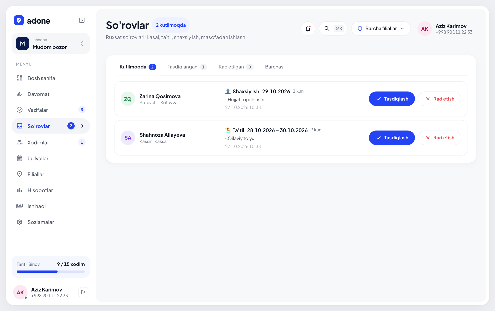
So'rovlar: Kutilmoqda · Tasdiqlangan · Rad etilgan
Xodim botda «📝 So'rov» yoki Mini App'da yuboradi: tur (kasal, ta'til, shaxsiy, masofadan, boshqa), kun(lar), sabab. Sizga Telegram'da tugmali xabar keladi.
So'rovlar sahifasi (menyuda kutilayotganlar soni) → Tasdiqlash yoki Rad etish (sabab). Botdan ham: ✅ / ❌ tugmalari.
Tasdiqlansa o'sha kunlar «Ruxsatda», xodimga xabar ketadi. O'tgan kun bo'lsa davomat qayta hisoblanadi.
Xodim o'z kutilayotgan so'rovini bekor qila oladi. Bir kunga ikki so'rov bo'lmaydi; 30 kundan eski kunlarga so'rov emas — davomatni tuzatish orqali.
14 Ish haqi: qoidalar, tuzatish, oyni yopish
Nima uchun: oylik vedomost tabel va tasdiqlangan vazifalardan avtomatik; qoidalarni siz belgilaysiz, hamma qo'lda o'zgartirish sabab bilan yoziladi.
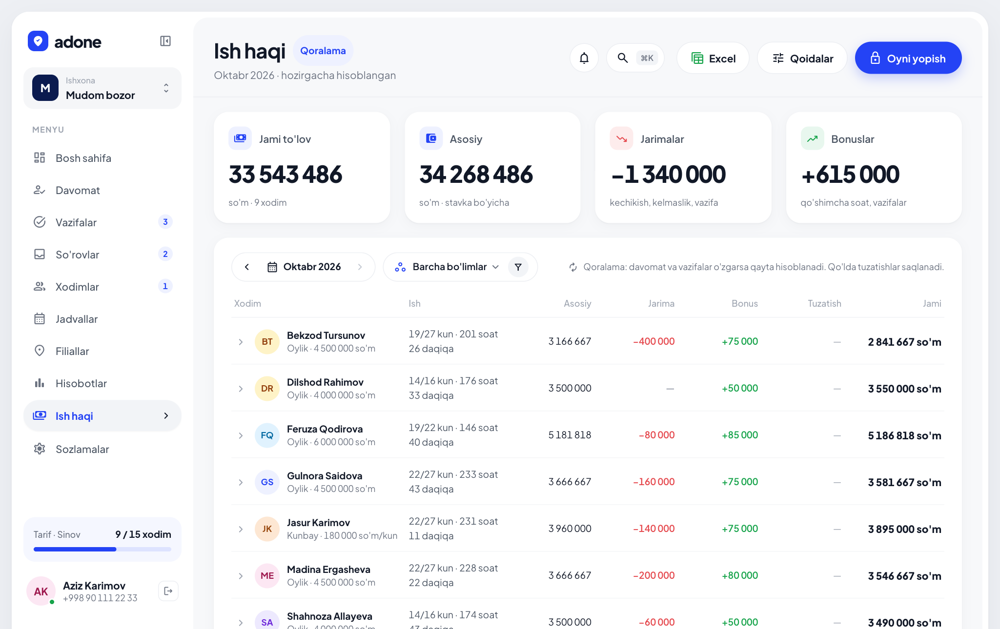
Ish haqi: KPI, xodimlar jadvali (asosiy · jarima · bonus · tuzatish · jami), Qoidalar, Oyni yopish, Excel
Qoidalar (o'ng yuqorida): Jarimalar — kechikish (har daqiqa yoki har holat uchun, so'm), sababsiz kelmagan kun, erta ketish, vazifa kechikdi; Bonuslar — qo'shimcha soat, vazifa o'z vaqtida, 5 baho; Jarima cheklovi — asosiydan % (standart 30). Hammasi butun so'mda. Saqlang — joriy qoralama qayta hisoblanadi.
Xodim kartasida stavka: oylik (reja kunlariga mutanosib, ruxsat kunlari to'lanadi), kunbay (kelgan kun × stavka), soatbay (ishlagan daqiqa).
Ish haqi sahifasi → oy. Qoralama har ochilganda qayta hisoblanadi. Qator ochilsa — davomat va hisob tafsiloti.
Tuzatish (qator ichida) — qo'shimcha +/− summa, sabab majburiy, audit jurnaliga tushadi. Faqat qoralamada.
Oy tugagach «Oyni yopish» — yakuniy hisob muhrlanadi (keyin davomat o'zgarsa ham summa o'zgarmaydi). Xato bo'lsa «Qayta ochish» — faqat egasi.
Excel — vedomost (bo'lim filtri bilan).
Xodim o'z ish haqini Mini App profilida ko'rishi uchun: Sozlamalar → Ish haqi → «Xodim o'z ish haqini Mini App'da ko'radi». O'zi qo'shgan ishlar ish haqiga standart holda ta'sir qilmaydi (sozlamada yoqiladi).
15 Hisobotlar
Nima uchun: haftalik/oylik rasm — kim barqaror, kim kechikadi, vazifalar qanday bajarilyapti; reyting bilan rag'bat.
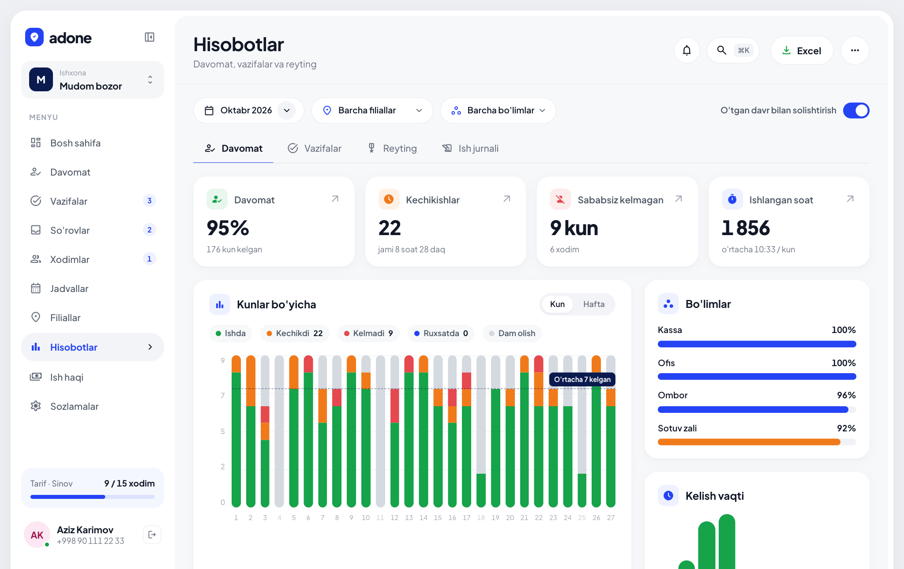
Hisobotlar → Davomat: KPI, kunlar/haftalar, kelish vaqti
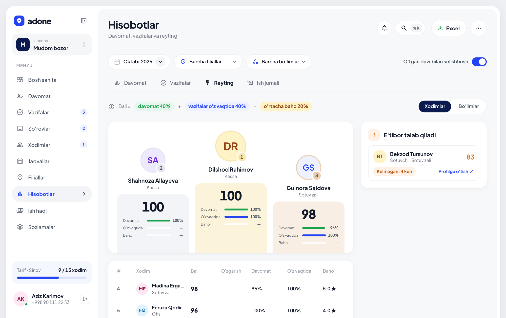
Reyting: ball, o'rin o'zgarishi, e'tibor talab qiladiganlar
Davr: Bu hafta / O'tgan hafta / Bu oy / O'tgan oy / Tanlash (93 kungacha); filial, bo'lim filtri; oldingi davr bilan solishtirish.
Davomat — kelgan %, kechikishlar, kelmagan, ishlagan vaqt; bo'limlar bo'yicha; kelish vaqti taqsimoti; xodimlar jadvali.
Vazifalar — berilgan, bajarilgan, o'z vaqtida %, o'rtacha baho, qaytarilgan; xodim bo'yicha; o'zi qo'shgan ishlar.
Reyting — ball = davomat 40% + vazifalar o'z vaqtida 40% + o'rtacha baho 20%; o'rin o'zgarishi; «E'tibor talab qiladi» — 90 dan past, sababi bilan. Bo'limlar reytingi.
Ish jurnali — davrda bajarilgan barcha ishlar (xodim, manba bo'yicha), hisobot rasmlari.
Excel — varaqlar: davomat, vazifalar, reyting, jurnal. ⋯ → chop etish / PDF.
16 Sozlamalar
Nima uchun: tizim xatti-harakati — kim tasdiqlaydi, qachon eslatadi, kimga xabar boradi — ishxonaga moslanadi.
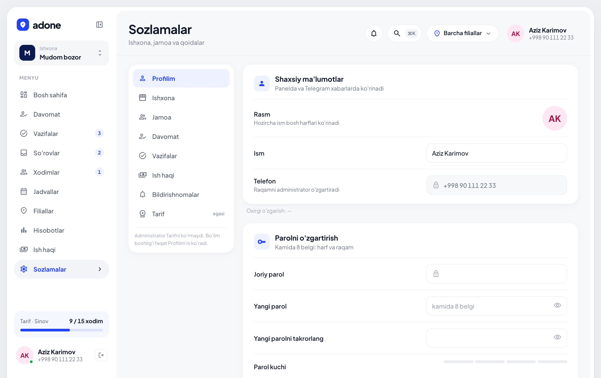
Sozlamalar: bo'limlar
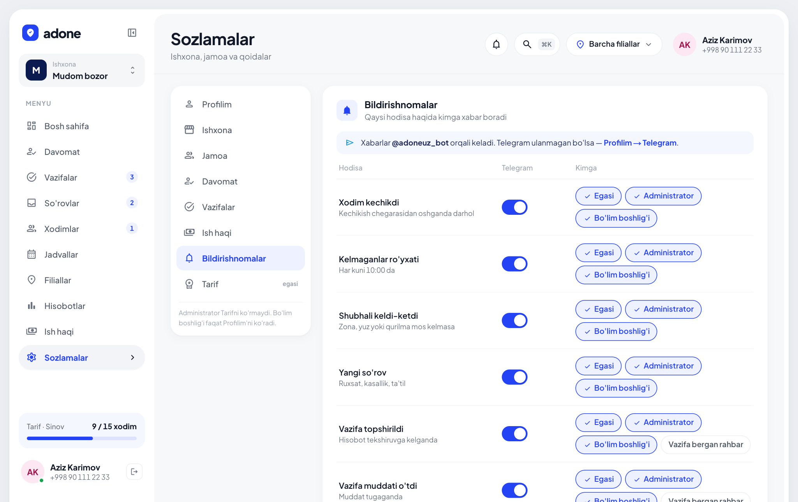
Bildirishnomalar: hodisa → kimga
Bo'lim
Nima bor
Profilim
Ism, telefon, parolni o'zgartirish, kirishlar tarixi (qurilma, IP). Hamma panel foydalanuvchisiga ochiq.
Ishxona
Nomi, logotip, vaqt mintaqasi (Asia/Tashkent), ish haftasi boshlanishi, sana formati, til; ishxonani yopish (arxiv).
Jamoa
Admin va menejer qo'shish: egasi — admin va menejer, admin — faqat menejer. Yangi hisob: vaqtinchalik parol yoki Telegram orqali taklif (bot parolni o'zi yuboradi). Menejerga bo'lim(lar) biriktiriladi. O'z Telegram'ingizni ulash havolasi shu yerda.
Davomat
Avtomatik tasdiqlash (ro'yxatdan o'tgan xodim darhol faol), botda faqat jonli lokatsiya, GPS aniqligi talabi, yuz o'xshashlik chegarasi va bosh burilishi (jonlilik), qurilmani bog'lash, «Ketdim» bosilmasa necha soatdan keyin yopish (erkin grafikda alohida), «Kelmaganlar va kechikkanlar» xabari vaqti (standart 10:00).
Vazifalar
Eslatmalar: qabul qilinmasa (N daqiqa), muddatga 1 soat qolganda, muddat o'tganda, hisobot 24 soat tekshirilmasa; tinch vaqt (22:00–08:00); o'zi qo'shgan ish rahbar tasdig'ini talab qiladimi.
Ish haqi
Xodim o'z ish haqini Mini App'da ko'radimi; o'zi qo'shgan ishlar ish haqiga ta'sir qiladimi; oxirgi yopilgan oy.
Bildirishnomalar
Har hodisa uchun kimga Telegram xabari: kechikdi, kelmaganlar, shubhali, ruxsat so'rovi, hisobot keldi, muddati o'tdi, yangi xodim → egasi / adminlar / bo'lim boshlig'i / vazifani bergan. O'chirib ham qo'ysa bo'ladi.
Tarif (egasi)
Joriy tarif, xodimlar limiti, to'lov (Click/Payme — tez orada; hozircha qo'llab-quvvatlash orqali).
17 Rahbar Mini App'i
Nima uchun: telefonda, Telegram ichida — bugungi davomat, qarorlar, vazifalar, hisobot. Panelga kirish shart emas.
Telegram'ingiz ulangan bo'lsa (2-bob), bot chatidagi «Ochish» tugmasi rahbar Mini App'ini ochadi. Egasi, admin va bo'lim boshlig'i uchun; menejer faqat o'z bo'limini ko'radi.
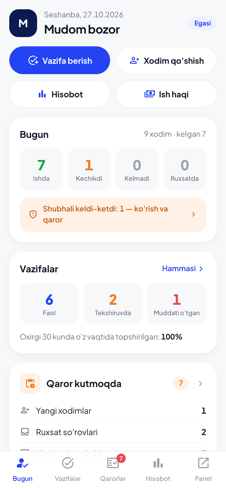
Bugun: tezkor tugmalar, davomat, vazifalar KPI, qarorlar
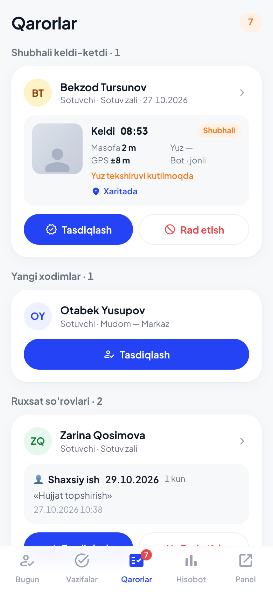
Qarorlar: shubhali keldi-ketdi, yangi xodim, ruxsat…
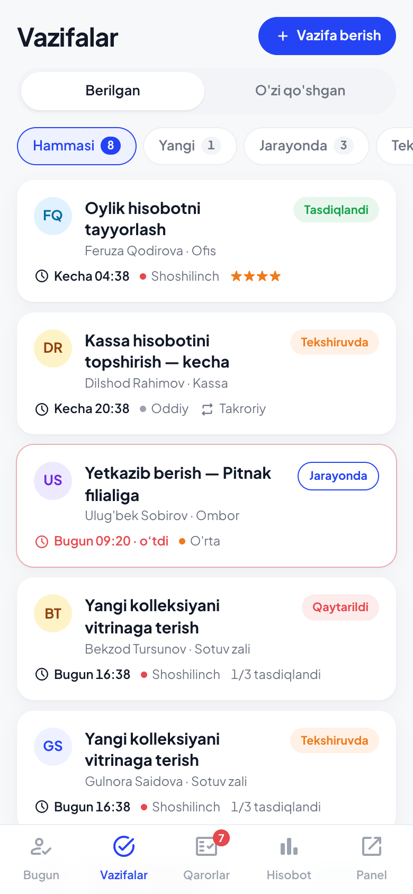
Vazifalar: holat tablari, nazorat
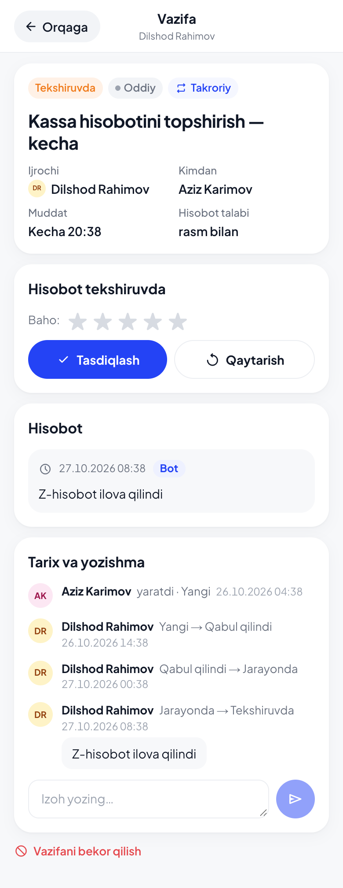
Vazifa: baho, qaytarish, hisobot, yozishma
Bugun — Ishda / Kechikdi / Kelmadi / Ruxsatda; shubhali bo'lsa sariq banner (→ Qarorlar); vazifalar (Faol / Tekshiruvda / Muddati o'tgan); Qaror kutmoqda soni; xodimlar ro'yxati — kelgan vaqti va holati. Kelmagan xodim qatorida «Eslatma» — bir bosishda botga xabar (kuniga bir marta). Xodim ismi → xodim kartasi.
Qarorlar — bir sahifada hamma kutayotgan narsa: shubhali keldi-ketdi (isbot kartochkasi: selfi/video, masofa, yuz %, GPS → Tasdiqlash / Rad etish), yangi xodimlar (Tasdiqlash), ruxsat so'rovlari (Tasdiqlash / Rad etish sabab bilan), muddat so'rovlari (Ruxsat / Rad etish), hisobotlar tekshiruvda (baho ★ → Tasdiqlash yoki Qaytarish sabab bilan).
Vazifalar — Berilgan / O'zi qo'shgan; tablar Hammasi · Yangi · Jarayonda · Tekshiruvda · Muddati o'tgan · Bajarilgan. Vazifa sahifasida hisobot fayllari, boshqa ijrochilar, tarix, izoh yozish, tasdiqlash / qaytarish / bekor qilish, muddat so'rovi.
Vazifa berish — paneldagi forma bilan bir xil (Kimga chiplari, muddat, hisobot talabi, bosqichlar, takrorlash).
Ish haqi (egasi, admin): oy vedomosti, faqat ko'rish
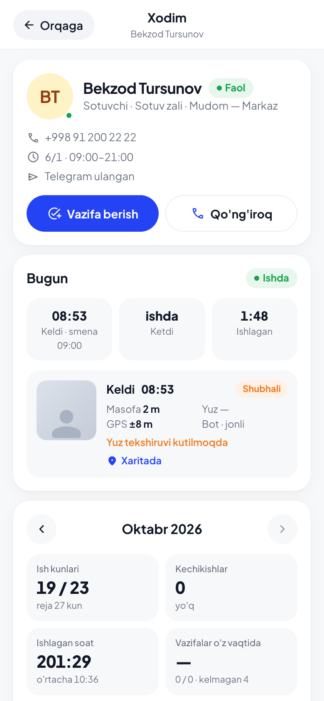
Xodim kartasi: bugun, isbotlar, oy tabeli, ishlar
Hisobot — Bu hafta / O'tgan hafta / Bu oy / O'tgan oy: kelgan %, kechikishlar, kelmagan, vazifalar, reyting TOP-5, e'tibor talab qiladiganlar. To'liq hisobot va Excel — panelda.
Ish haqi — jami, asosiy, jarima, bonus, xodimlar bo'yicha; oy almashtirish. Tuzatish va yopish — panelda.
Xodim kartasi — bugungi holat va isbotlar, oy kalendari va KPI, ishlar; Vazifa berish, Telegram'da yozish, qo'ng'iroq, eslatma.
Xodim qo'shish (Bugun'dagi tugma) — paneldagi forma; saqlangach taklif havolasi va «Telegram'da yuborish».
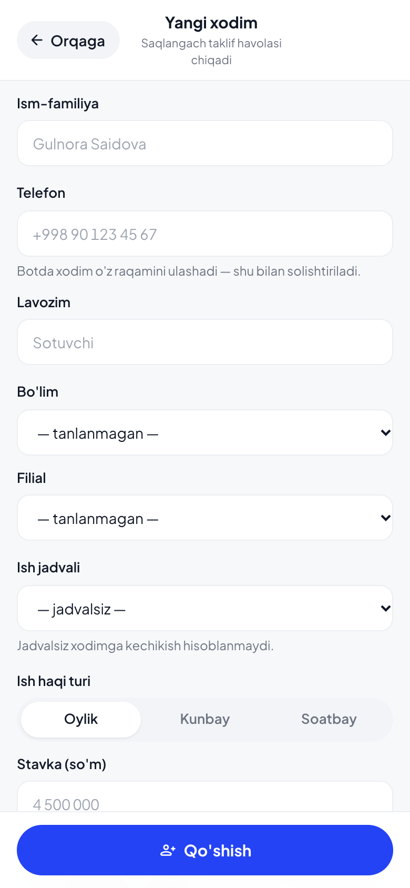
Xodim qo'shish — Mini App'dan
Pastki menyu: Bugun · Vazifalar · Qarorlar · Hisobot · Panel (Panel — brauzerda app.adone.uz). Menejerda Hisobot va Ish haqi yo'q.
Rahbarning o'zi ham «Keldim» qilishi kerak bo'lsa, u xodim sifatida ham qo'shiladi (Xodimlar → qo'shish, o'z raqami) — shunda Mini App xodim ko'rinishida ochiladi, rahbar amallari esa paneldan va bot tugmalaridan.
18 Telegram bildirishnomalari va botdan qaror
Nima uchun: ko'p qarorlarni botning o'zida bir tugma bilan qilasiz; «Mini App’da ochish» — tafsilot va fayllar.
a
adone davomatbot
⏰ Ulug'bek Sobirov kechikdi: 23 daqiqa (keldi 09:23).09:23
Mini App’da ochish ↗
🔎 Bekzod Tursunov — kelish shubhali (face_mismatch). Mini App → Qarorlar yoki Panel → Davomat → «Shubhali».08:54
Mini App’da ochish ↗
👤 Otabek Yusupov botda ro'yxatdan o'tdi — tasdiqlang: Mini App → Qarorlar yoki panelda Xodimlar → «Tasdiq kutmoqda».10:12
⚠️ Muddati o'tdi · ⏰ Hisobot 24 soatdan beri tekshirilmagan
Eslatmalar
✅ / 🔁 tugmalari
📝 Ruxsat so'rovi
Xodim so'raganda
✅ Tasdiqlash · ❌ Rad etish
📅 Muddatni uzaytirish so'rovi
Xodim so'raganda
✅ Ruxsat · ❌ Rad etish
Kimga qaysi xabar borishi — Sozlamalar → Bildirishnomalar. Bo'lim boshlig'iga faqat o'z bo'limi xodimlari haqida boradi; vazifa hisoboti — vazifani bergan rahbarga ham.
19 Ko'p uchraydigan vaziyatlar
Xodim «raqam mos kelmadi» deyapti.
Uning Telegram'i boshqa raqamda. Xodimlar → xodim → ✎ → Telefon'ni to'g'rilang, havolani qayta yuboring.
Taklif havolasi «yaroqsiz».
14 kun o'tgan yoki ishlatilgan. Xodim profili → Telegram → «Havolani yangilash» → yangi havolani yuboring.
Xodim telefonini almashtirdi, Mini App «boshqa qurilma» deydi.
Xodim profili → Ma'lumotlar → Qurilma → Uzish. Keyingi «Keldim» yangi telefonni bog'laydi.
Xodim doim «shubhali» chiqadi.
Profil → Yuz namunasi → Qayta olish (xodimga /yuz xabari boradi) — yaxshi yorug'likda yangi video. Yoki Sozlamalar → Davomat'da o'xshashlik chegarasini biroz pasaytiring (standart 0.45).
Xodim internet yo'qligi uchun kech «Keldim» qildi.
Davomat → qator ⋯ → Davomatni tuzatish → Keldi vaqtini belgilang, sabab yozing. Jurnalda ikkalasi ham qoladi.
Xodim ishdan ketdi.
Profil → «Ishdan bo'shatish». Yozuvlar qoladi, yuz namunasi va videolar o'chiriladi, Telegram uziladi. Qayta ishga olsangiz — «O'chirilgan» tabida qayta yoqish.
Avval tabelni tekshiring (davomat tuzatiladi — hisob o'zi yangilanadi), keyin Qoidalar'ni. Bir martalik farq — «Tuzatish» sabab bilan. Yopilgan oy — faqat egasi «Qayta ochish».
Tungi smena qaysi kunga yoziladi?
Smena boshlangan kunga. Jadvalda tugash vaqti boshlanishdan kichik bo'lsa tizim buni o'zi tushunadi.
Bildirishnoma kelmayapti.
Telegram ulanganmi (Sozlamalar → Jamoa, yashil belgi)? Sozlamalar → Bildirishnomalar'da shu hodisa va sizning rolingiz yoqilganmi? Botni bloklab qo'ymaganmisiz?
adone.uz · Savol va takliflar: qo'llab-quvvatlash Telegram'i yoki telefon (landing sahifasida).